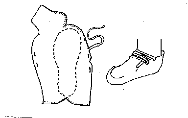

Ronjberg Mose Shoe (c700-1000)
This pair of ox-hide pucker seam shoes were found on the body of a man in Ronbjerg Moes, Denmark, each cut from a single piece of hide and secured by a single thong (1cm x 50 cm) that forms the single lace, which also straps them to the footThis design is based on a description found in
Hald
Return to
[Index] or
[Next]
Footwear of the Middle Ages - Historical Shoe Designs/Number 7, by I. Marc Carlson. Copyright 1996
This page is given for the free exchange of information, provided the Author's Name is included in all future revisions, and no money change hands, other than as expressed in the Copyright Page.